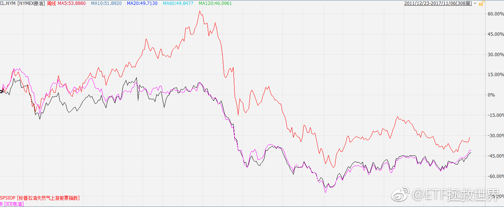

回复@mydxkl:不过有时候我说话也很随意。没准以后12500就卖点也未可知。。//@mydxkl:记在小本子上//@ETF拯救世界:13000之前不考虑卖出。成本低，踏踏实实拿着就是坠吼的。能不能到无所谓。//@ETF拯救世界:一根阳线干掉七天下跌。朋友们，长期持有的意义。慢慢你就真的明白了。@ETF拯救世界:好久没见你嘚瑟了。甚念。$全指医药 sh000991$
13000之前不考虑卖出。成本低，踏踏实实拿着就是坠吼的。能不能到无所谓。//@ETF拯救世界:一根阳线干掉七天下跌。朋友们，长期持有的意义。慢慢你就真的明白了。//@ETF拯救世界:M头还是新高。琢磨不透你啊真是。@ETF拯救世界:好久没见你嘚瑟了。甚念。$全指医药 sh000991$
SPSIOP（油气的基准指数），从过去几年看，是能够与美油布油同步的。特点是弹性比油价要大很多。这一轮弹性确实差了点。接下来要不然就是油价回来，要不然就是SPSIOP跟上。谁知道呢，看着呗。不过还是那句话，别因为某个品种一时表现不好就否认它。今天的卢瑟可能就是明天的温拿。 